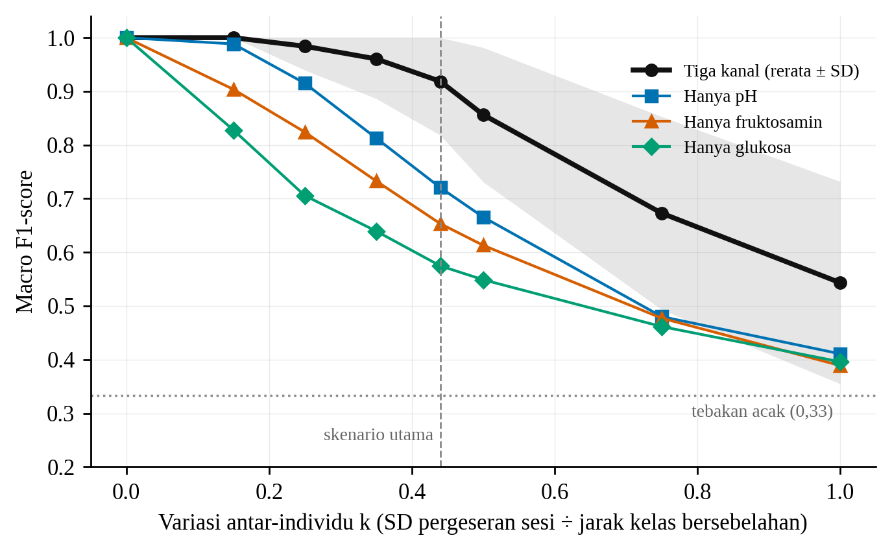
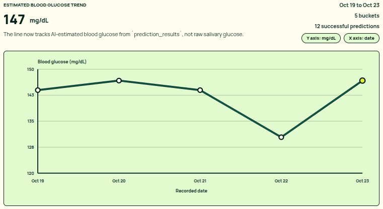

Makin besar variasi antar-orang (k), makin turun F1. Gabungan tiga kanal selalu di atas kanal tunggal. Garis putus-putus = skenario utama (k = 0,44).

TAMPILAN DEMO Hasil prediksi AI tersaji sebagai tren glukosa per hari. Kalibrasi masih sementara, bukan bukti akurasi.